Każdy tekst przychodzi, trzyma się i odchodzi na własnym odcinku przewijania. Następny wchodzi dopiero, gdy poprzedni zniknął.
Wejście i wyjście zajmują około 0,3 ekranu, a stan pełny co najmniej 1 ekran. Czytanie nie wymaga łapania tekstu w locie.
Gdy przewijanie ustanie w trakcie przenikania, strona sama je kończy, w kierunku, w którym szedł czytelnik. Każdy ruch kółkiem przejmuje kontrolę z powrotem.
Po wczytaniu coś już się dzieje: woda opada, nurek nadpływa, O się otwiera. Bez napisu „przewiń”. Ten sam element (woda, film, głębokościomierz) przechodzi przez całą stronę.
Położenie nurka zmierzone jest w każdej chwili nagrania. Test przechodzi całą stronę co 0,1 ekranu i sprawdza, czy żadna linia nie wchodzi na inną linię ani na postać.
Przechodzą od jednego zatrzymanego kadru do następnego. Menu przenosi od razu do kursów, wyjazdów, zasad i kontaktu.
Jedna woda od początku do końca. W dół idą emocje, w górę informacje, a formularz czeka na powierzchni. Strona kończy się tam, gdzie się zaczęła.
29.1 ekranów przewijania
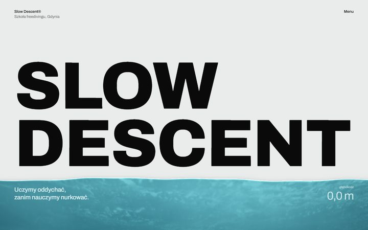
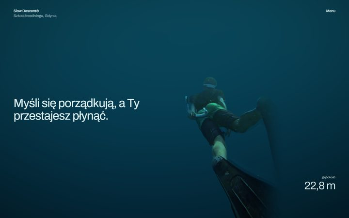
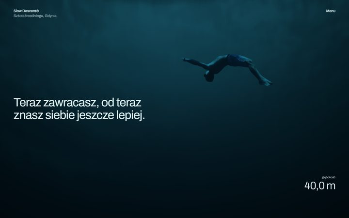
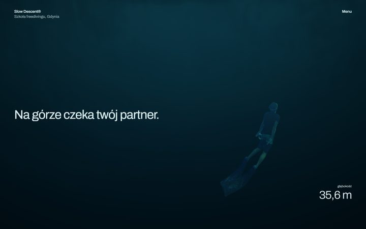
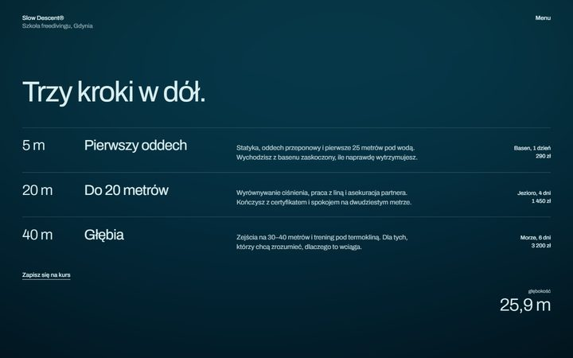
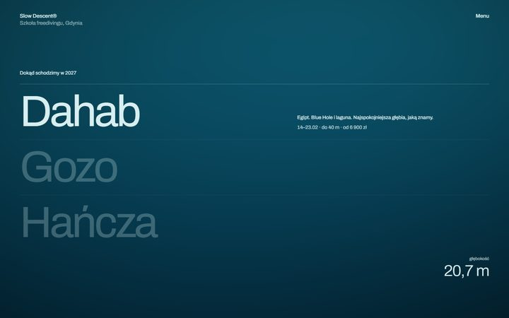
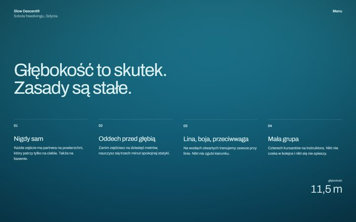
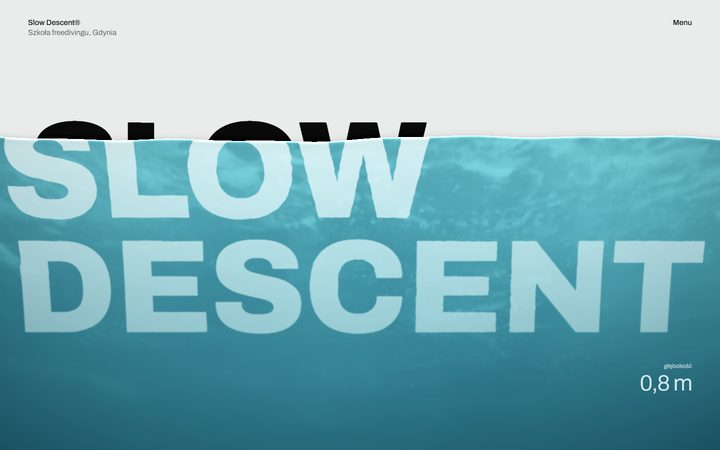
Prawdziwe nagranie w pełnym kadrze, bez wycinania postaci. Film kurczy się do pionowej planszy, która towarzyszy czytaniu, a na końcu ciemność przechodzi w światło i papier.
24.3 ekranów przewijania
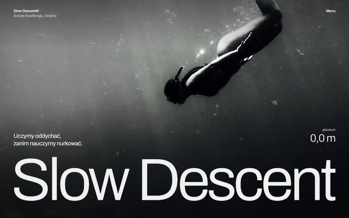
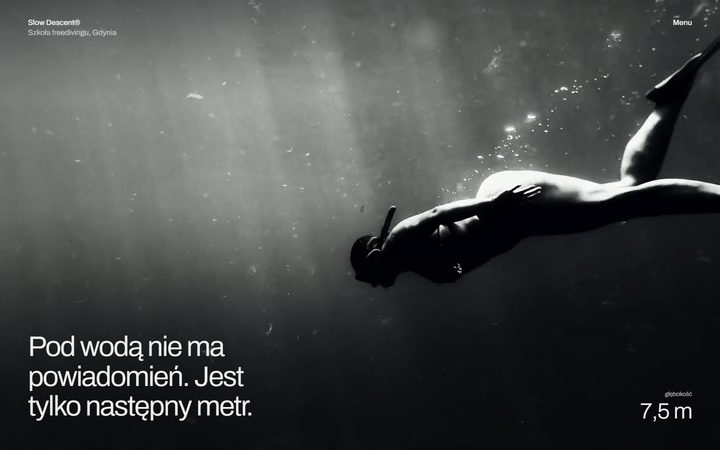
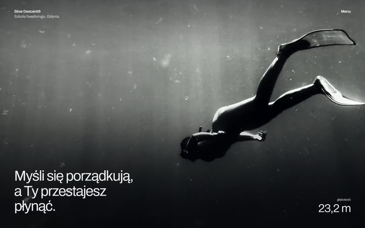
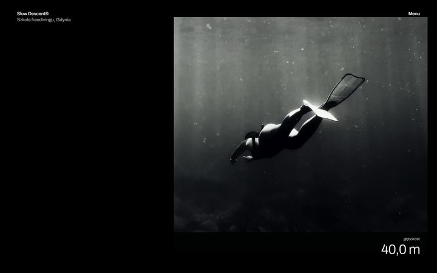
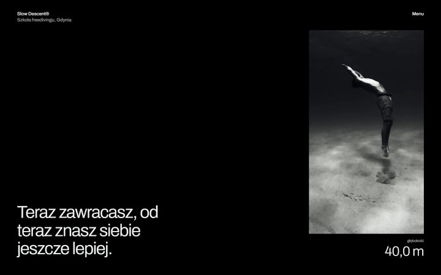
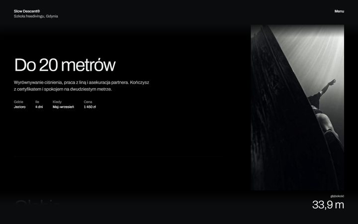
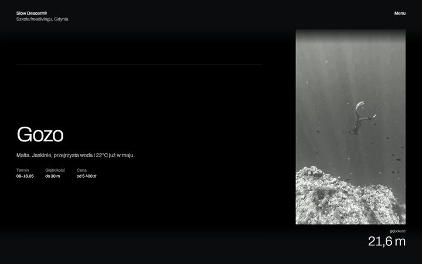
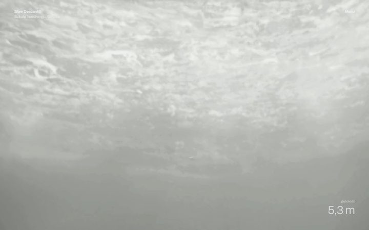
Papier i tusz. Litery rozchodzą się, a O rośnie do pełnego ekranu. Potem manifest czytany słowo po słowie, schody kursów, nazwy wyjazdów zapalane po kolei.
19.4 ekranów przewijania
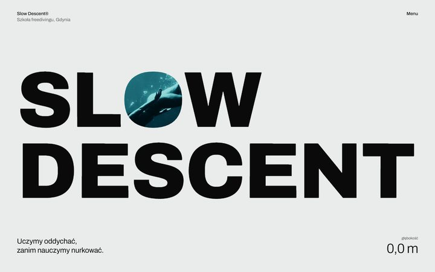
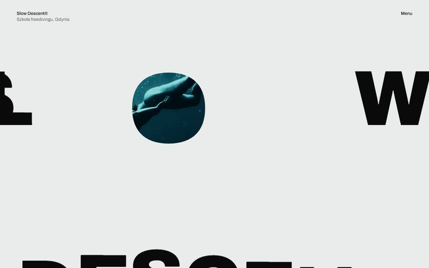
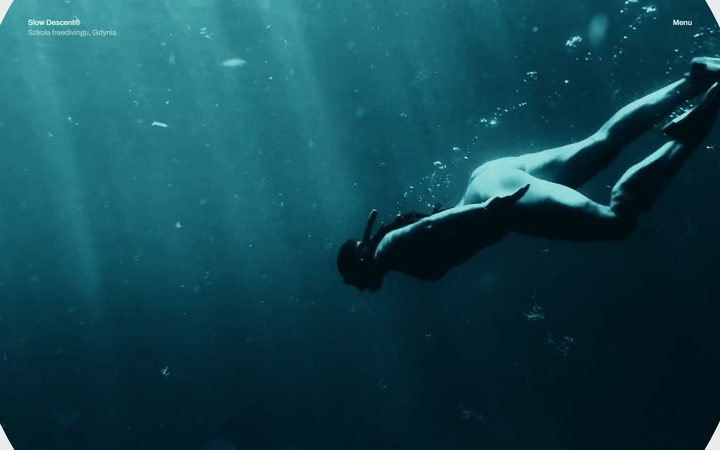
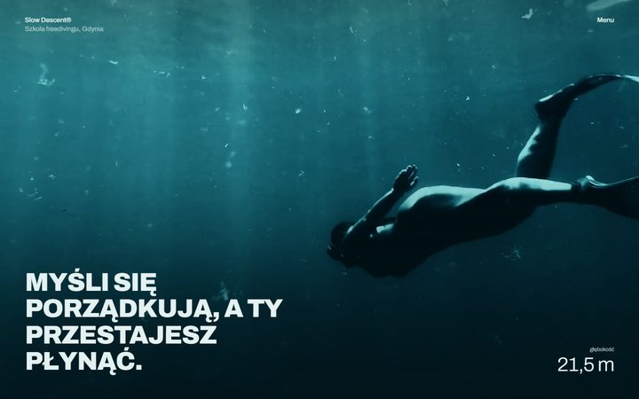
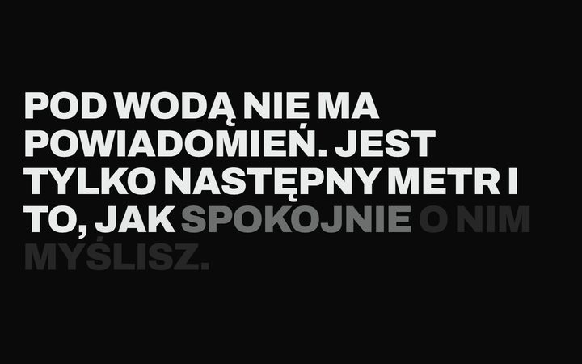
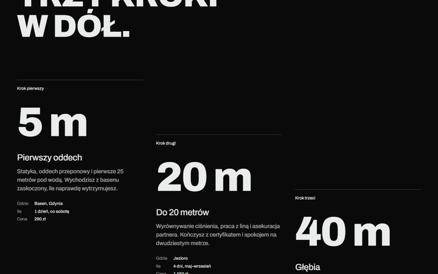
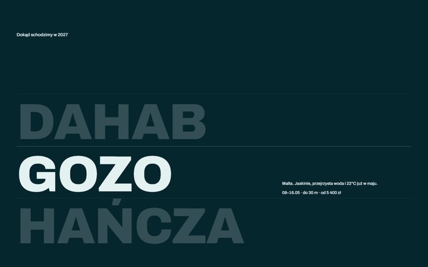
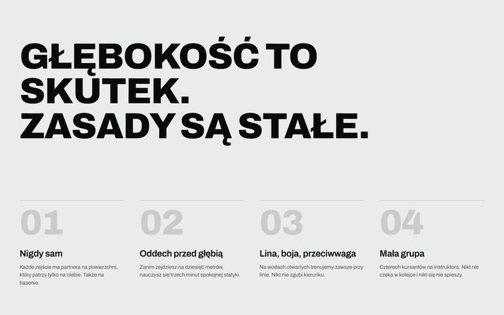